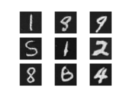

使用 PyTorch C++ 前端
译者：solerji
PyTorch C++ 前端 是PyTorch机器学习框架的一个纯C++接口。PyTorch的主接口是Python，Python API位于一个基础的C++代码库之上，提供了基本的数据结构和功能，例如张量和自动求导。C++前端暴露了一个纯的C++11的API，在C++底层代码库之上扩展了机器学习训练和推理所需的工具扩展。这包括用于神经网络建模的内置组件集合；扩展此集合的自定义模块API；流行的优化算法库（如随机梯度下降）；使用API定义和加载数据集的并行数据加载程序；序列化例行程序等等。
本教程将为您介绍一个用C++ 前端对模型进行训练的端到端示例。具体地说，我们将训练一个 DCGAN——一种生成模型——来生成 MNIST数字的图像。虽然看起来这是一个简单的例子，但它足以让你对 PyTorch C++ frontend有一个深刻的认识，并勾起你对训练更复杂模型的兴趣。我们将从设计它的原因开始，告诉你为什么你应该使用C++前端，然后直接深入解释和训练我们的模型。
小贴士
可以在 this lightning talk from CppCon 2018 网站观看有关C++前端的快速介绍。
小贴士
这份笔记提供了C++前端组件和设计理念的全面概述。
小贴士
在 https://pytorch.org/cppdocs你可以找到工作人员的API说明文档，这些PyTorch C++ 生态系统的文档是很有用的。
动机
在我们开始令人兴奋的GANs和MNIST数字的旅程之前，让我们往回看，讨论一下为什么我们一开始要使用C++前端而不是Python。我们（the PyTorch team）创建了C++前端，以便在不能使用Python的环境中或者是没有适合该作业的工具的情况下进行研究。此类环境的示例包括：
- 低延迟系统：您可能希望在具有高帧/秒和低延迟的要求的纯C++游戏引擎中进行强化学习研究。由于Python解释器的速度慢，Python可能根本无法被跟踪，使用纯C++库这样的环境比Python库更合适。
- 高度多线程环境：由于全局解释器锁（GIL），一次不能运行多个系统线程。多道处理是另一种选择，但它不具有可扩展性，并且有显著的缺点。C++没有这样的约束，线程易于使用和创建。需要大量并行化的模型，像那些用于深度神经进化 Deep Neuroevolution的模型，可以从中受益。
- 现有的C++代码库：您可能是一个现有的C++应用程序的所有者，在后台服务器上为Web页面提供服务，以在照片编辑软件中绘制3D图形，并希望将机器学习方法集成到您的系统中。C++前端允许您保留在C++中，免除了在Python和C++之间来回绑定的麻烦，同时保留了传统 PyTorch（Python）体验的大部分灵活性和直观性。
C++前端不打算与Python前端竞争，它是为了补充Python前端。我们知道由于它简单、灵活和直观的API研究人员和工程师都喜欢PyTorch。我们的目标是确保您可以在每个可能的环境中利用这些核心设计原则，包括上面描述的那些。如果这些场景中的一个描述了你的用例，或者如果你只是感兴趣的话，跟着我们在下面的文章中详细探究C++前端。
小贴士
C++前端试图提供尽可能接近Python前端的API。如果你对Python前端有经验，并且想知道：“我如何用C++前端做这个东西？”你可以以Python的方式编写代码，在Python中，通常可以使用与C++相同的函数和方法（只要记住用双冒号替换点）。
编写基本应用程序
让我们开始编写一个小的C++应用程序，以验证我们在安装和构建环境上是一致的。首先，您需要获取 LibTorch分发的副本——我们已经准备好了ZIP存档，它封装了使用C++前端所需的所有相关的头文件、库和 CMake 构建文件。Libtorch发行版可在Linux, MacOS 和 Windows的PyTorch website上下载。本教程的其余部分将假设一个基本的Ubuntu Linux环境，您也可以在MacOS或Windows上继续自由地学习。
小贴士
关于安装PyTrac C++ 在 Installing C++ Distributions of PyTorch 的文档更详细地描述了以下步骤。
第一步是通过从PyTorch网站检索到的链接在本地下载 LibTorch发行版。对于普通的Ubuntu Linux环境，这意味着运行：
wget https://download.pytorch.org/libtorch/nightly/cpu/libtorch-shared-with-deps-latest.zip
unzip libtorch-shared-with-deps-latest.zip
接下来，让我们编写一个名为 dcgan.cpp 的小型C++文件，它包括 torch/torch.h ，现在只需打印出三×三的身份矩阵：
#include <torch/torch.h>
#include <iostream>
int main() {
torch::Tensor tensor = torch::eye(3);
std::cout << tensor << std::endl;
}
我们将使用CMakeLists.txt文件构建这个小应用程序以及我们稍后的完整训练脚本：
cmake_minimum_required(VERSION 3.0 FATAL_ERROR)
project(dcgan)
find_package(Torch REQUIRED)
add_executable(dcgan dcgan.cpp)
target_link_libraries(dcgan "${TORCH_LIBRARIES}")
set_property(TARGET dcgan PROPERTY CXX_STANDARD 11)
笔记
虽然CMake是LibTorch推荐的构建系统，但这并不是一个硬性要求。您还可以使用Visual Studio项目文件、Qmake、plain Makefiles或任何其他您觉得合适的构建环境。但是，我们不提供开箱即用的支持。
记下上述CMake文件中的第4行： find_package(Torch REQUIRED).。这将指示CMake查找LibTorch库的构建配置。为了让CMake知道在哪里找到这些文件，我们必须在调用 cmake时设置 CMAKE_PREFIX_PATH 。在进行此操作之前，让我们就 dcgan应用程序的以下目录结构达成一致：
dcgan/
CMakeLists.txt
dcgan.cpp
此外，我将特别指出解压LibTorch分发的路径 /path/to/libtorch。请注意，这必须是绝对路径。我们用编写 $PWD/../../libtorch 的做法获取相应的绝对路径；如果将 CMAKE_PREFIX_PATH 设置为../../libtorch它将以意想不到的方式中断。现在，我们已经准备好构建我们的应用程序：
root@fa350df05ecf:/home# mkdir build
root@fa350df05ecf:/home# cd build
root@fa350df05ecf:/home/build# cmake -DCMAKE_PREFIX_PATH=/path/to/libtorch ..
-- The C compiler identification is GNU 5.4.0
-- The CXX compiler identification is GNU 5.4.0
-- Check for working C compiler: /usr/bin/cc
-- Check for working C compiler: /usr/bin/cc -- works
-- Detecting C compiler ABI info
-- Detecting C compiler ABI info - done
-- Detecting C compile features
-- Detecting C compile features - done
-- Check for working CXX compiler: /usr/bin/c++
-- Check for working CXX compiler: /usr/bin/c++ -- works
-- Detecting CXX compiler ABI info
-- Detecting CXX compiler ABI info - done
-- Detecting CXX compile features
-- Detecting CXX compile features - done
-- Looking for pthread.h
-- Looking for pthread.h - found
-- Looking for pthread_create
-- Looking for pthread_create - not found
-- Looking for pthread_create in pthreads
-- Looking for pthread_create in pthreads - not found
-- Looking for pthread_create in pthread
-- Looking for pthread_create in pthread - found
-- Found Threads: TRUE
-- Found torch: /path/to/libtorch/lib/libtorch.so
-- Configuring done
-- Generating done
-- Build files have been written to: /home/build
root@fa350df05ecf:/home/build# make -j
Scanning dependencies of target dcgan
[ 50%] Building CXX object CMakeFiles/dcgan.dir/dcgan.cpp.o
[100%] Linking CXX executable dcgan
[100%] Built target dcgan
在上文，我们首先在 dcgan 目录中创建了一个 build 文件夹，然后进入这个文件夹，运行 cmake 命令生成必要的build（Make）文件，最后通过运行 make -j.成功编译了项目。现在，我们将项目设置为执行最小的二进制文件，基本项目配置这一部分就完成了：
root@fa350df05ecf:/home/build# ./dcgan
1 0 0
0 1 0
0 0 1
[ Variable[CPUFloatType]{3,3} ]
在我看来它就像一个身份矩阵！
定义神经网络模型
既然我们已经配置了基本环境，那么我们可以深入了解本教程中更有趣的部分。首先，我们将讨论如何在C++前端中定义和交互模块。我们将从基本的、小规模的示例模块开始，然后使用C++前端提供的内置模块的广泛库来实现一个成熟的GAN。
模块API基础知识
依据Python接口，基于C++前端的神经网络由可重用的模块组成，称为模块。它有一个基本模块类，从中派生所有其他模块。在Python中，这个类是 torch.nn.Module ，在C++中是 torch::nn::Module模块。除了实现模块封装的算法的 forward() 方法外，模块通常还包含三种子对象：参数、缓冲区和子模块。
参数和缓冲区以张量的形式存储状态。参数记录，而缓冲区不记录。参数通常是神经网络的可训练权重。缓冲区的示例包括用于批处理规范化的平均值和方差。为了重用特定的逻辑块和状态块，PyTorch API允许嵌套模块。嵌套模块称为子模块。
必须显式注册参数、缓冲区和子模块。注册后，可以使用parameters() or buffers()等方法来检索整个（嵌套）模块层次结构中所有参数的容器。类似地，类似于 to(...)的方法（例如 to(torch::kCUDA) 将所有参数和缓冲区从CPU移动到CUDA内存）在整个模块层次结构上工作。
定义模块并注册参数
为了将这些随机数放入代码中，让我们考虑一下在Python接口中编写这个简单模块：
import torch
class Net(torch.nn.Module):
def __init__(self, N, M):
super(Net, self).__init__()
self.W = torch.nn.Parameter(torch.randn(N, M))
self.b = torch.nn.Parameter(torch.randn(M))
def forward(self, input):
return torch.addmm(self.b, input, self.W)
在C++中它长这样：
#include <torch/torch.h>
struct Net : torch::nn::Module {
Net(int64_t N, int64_t M) {
W = register_parameter("W", torch::randn({N, M}));
b = register_parameter("b", torch::randn(M));
}
torch::Tensor forward(torch::Tensor input) {
return torch::admm(b, input, W);
}
torch::Tensor W, b;
};
就像在Python中一样，我们定义了一个类 Net （为了简单起见，这里是 struct 而不是一个 class）并从模块基类派生它。在构造函数内部，我们使用 torch::randn 创建张量，就像在Python中使用torch.randn一样。一个有趣的区别是我们如何注册参数。在Python中，我们用torch.nn.Parameter类来包装张量，而在C++中，我们必须通过 register_parameter 参数方法来传递张量。原因是Python API可以检测到属性的类型为 torch.nn.Parameter ，并自动注册这些张量。在C++中，反射是非常有限的，因此提供了一种更传统的（和不太神奇的）方法。
注册子模块并遍历模块层次结构
同样，我们可以注册参数，也可以注册子模块。在Python中，当子模块被指定为模块的属性时，将自动检测和注册子模块：
class Net(torch.nn.Module):
def __init__(self, N, M):
super(Net, self).__init__()
# Registered as a submodule behind the scenes
self.linear = torch.nn.Linear(N, M)
self.another_bias = torch.nn.Parameter(torch.rand(M))
def forward(self, input):
return self.linear(input) + self.another_bias
例如，这允许使用 parameters() 方法递归访问模块层次结构中的所有参数：
>>> net = Net(4, 5)
>>> print(list(net.parameters()))
[Parameter containing:
tensor([0.0808, 0.8613, 0.2017, 0.5206, 0.5353], requires_grad=True), Parameter containing:
tensor([[-0.3740, -0.0976, -0.4786, -0.4928],
[-0.1434, 0.4713, 0.1735, -0.3293],
[-0.3467, -0.3858, 0.1980, 0.1986],
[-0.1975, 0.4278, -0.1831, -0.2709],
[ 0.3730, 0.4307, 0.3236, -0.0629]], requires_grad=True), Parameter containing:
tensor([ 0.2038, 0.4638, -0.2023, 0.1230, -0.0516], requires_grad=True)]
为了在C++中注册子模块，使用恰当命名的 register_module() 方法注册一个就像 torch::nn::Linear:的模块。
struct Net : torch::nn::Module {
Net(int64_t N, int64_t M)
: linear(register_module("linear", torch::nn::Linear(N, M))) {
another_bias = register_parameter("b", torch::randn(M));
}
torch::Tensor forward(torch::Tensor input) {
return linear(input) + another_bias;
}
torch::nn::Linear linear;
torch::Tensor another_bias;
};
小贴士
您可以在这里的 torch::nn 命名空间文档中找到可用内置模块的完整列表，如 torch::nn::Linear, torch::nn::Dropout 和 torch::nn::Conv2d 。
上面代码的一个微妙之处就是，为什么我们要在构造函数的初始值设定项列表中创建子模块，而在构造函数主体中创建参数。这是一个很好的理由，我们将在下面进一步讨论C++前端的 ownership model 。最终，我们可以像在Python中那样递归地访问树的模块的参数。调用参数 parameters() 返回一个我们可以迭代的 std::vector<torch::Tensor>：
int main() {
Net net(4, 5);
for (const auto& p : net.parameters()) {
std::cout << p << std::endl;
}
}
输出的结果是：
root@fa350df05ecf:/home/build# ./dcgan
0.0345
1.4456
-0.6313
-0.3585
-0.4008
[ Variable[CPUFloatType]{5} ]
-0.1647 0.2891 0.0527 -0.0354
0.3084 0.2025 0.0343 0.1824
-0.4630 -0.2862 0.2500 -0.0420
0.3679 -0.1482 -0.0460 0.1967
0.2132 -0.1992 0.4257 0.0739
[ Variable[CPUFloatType]{5,4} ]
0.01 *
3.6861
-10.1166
-45.0333
7.9983
-20.0705
[ Variable[CPUFloatType]{5} ]
就像在Python中一样这里有三个参数。为了看到这些参数的名称，C++ API提供了一个 named_parameters()参数方法，它像Python一样返回 named_parameters()：
Net net(4, 5);
for (const auto& pair : net.named_parameters()) {
std::cout << pair.key() << ": " << pair.value() << std::endl;
}
我们可以再次执行来查看输出：
root@fa350df05ecf:/home/build# make && ./dcgan 11:13:48
Scanning dependencies of target dcgan
[ 50%] Building CXX object CMakeFiles/dcgan.dir/dcgan.cpp.o
[100%] Linking CXX executable dcgan
[100%] Built target dcgan
b: -0.1863
-0.8611
-0.1228
1.3269
0.9858
[ Variable[CPUFloatType]{5} ]
linear.weight: 0.0339 0.2484 0.2035 -0.2103
-0.0715 -0.2975 -0.4350 -0.1878
-0.3616 0.1050 -0.4982 0.0335
-0.1605 0.4963 0.4099 -0.2883
0.1818 -0.3447 -0.1501 -0.0215
[ Variable[CPUFloatType]{5,4} ]
linear.bias: -0.0250
0.0408
0.3756
-0.2149
-0.3636
[ Variable[CPUFloatType]{5} ]
笔记
torch::nn::Module 的文档 包含在模块层次结构上操作的方法的完整清单。
在正向模式中运行网络
为了在C++中运行网络，我们只需调用我们定义的 forward() 方法：
int main() {
Net net(4, 5);
std::cout << net.forward(torch::ones({2, 4})) << std::endl;
}
输出内容如下：
root@fa350df05ecf:/home/build# ./dcgan
0.8559 1.1572 2.1069 -0.1247 0.8060
0.8559 1.1572 2.1069 -0.1247 0.8060
[ Variable[CPUFloatType]{2,5} ]
模块所有权
现在，我们知道如何定义C++中的模块、寄存器参数、寄存器子模块、通过参数 parameters() 等方法遍历模块层次结构，和最后运行模块的 forward() 方法。在C++ API中有更多的方法、类和主题要我们思考，但接下来我会向你介绍完整清单 文档 。我们在一秒钟内实现 DCGAN模型和端到端训练管道的同时，还将涉及更多的概念。在我们这样做之前，让我简单地介绍一下C++前端的所有权模型，它提供了 torch::nn::Module.模块的子类。
对于这个论述，所有权模型指的是模块的存储和传递方式，它决定了谁或什么拥有一个特定的模块实例。在Python中，对象总是动态分配（在堆上）并具有引用语义。这很容易操作，也很容易理解。事实上，在Python中，您大可以忘记对象的位置以及它们是如何被引用的，而更专注于完成工作。
C++是一种这个领域提供了更多的选择的低级语言。它更加了复杂，并严重影响了C++前端的设计和人机工程学。特别地，对于C++前端中的模块，我们可以选择使用值语义或引用语义。第一种情况是最简单的，并在迄今为止的示例中显示：当传递给函数时，在堆栈上分配的模块对象，可以复制、移动（使用 std::move)）或通过引用和指针获取：
struct Net : torch::nn::Module { };
void a(Net net) { }
void b(Net& net) { }
void c(Net* net) { }
int main() {
Net net;
a(net);
a(std::move(net));
b(net);
c(&net);
}
对于第二种情况——引用语义——我们可以使用 std::shared_ptr.。引用语义的优点在于，与Python一样，它减少了认知模块如何传递给函数以及如何声明参数（假设在任何地方都使用shared_ptr ）。
struct Net : torch::nn::Module {};
void a(std::shared_ptr<Net> net) { }
int main() {
auto net = std::make_shared<Net>();
a(net);
}
据以往经验，来自动态语言的研究人员更倾向于引用语义而不是值语义，即使后者对于而言C++更为“本土”。还需要注意的是，为了接近PythonAPI的人机工程学，torch::nn::Module的设计依赖于所有权的共享。例如，以我们之前（此处简称）对Net的定义为例：
struct Net : torch::nn::Module {
Net(int64_t N, int64_t M)
: linear(register_module("linear", torch::nn::Linear(N, M)))
{ }
torch::nn::Linear linear;
};
为了使用 linear 子模块，我们希望将其直接存储在我们的类中。但是，我们也希望模块基类了解并能够访问这个子模块。为此，它必须存储对此子模块的引用。在这一点上，我们已经达到了所有权共享的需求。 torch::nn::Module 类和 具体类 Net 都需要引用子模块。因此，基类将模块存储为shared_ptr，具体的类也必须存储。
等等！在上面的代码中我没有看到它提及共享资源！为什么会这样？因为std::shared_ptr<MyModule>是一个很难输入的类型。为了保持研究人员的工作效率，我们提出了一个精心设计的方案来隐藏应该提及的共享资源——这是保留值语义的好处，它同时保留了引用语义。要了解这是如何工作的，我们可以查看核心库中torch::nn::Linear模块的简化定义（完整定义如下）：
struct LinearImpl : torch::nn::Module {
LinearImpl(int64_t in, int64_t out);
Tensor forward(const Tensor& input);
Tensor weight, bias;
};
TORCH_MODULE(Linear);
简而言之：模块不是 Linear,而是 LinearImpl.。它是一个宏定义，即 TORCH_MODULE 定义的真正的 Linear 。这个“生成的”类实际上是std::shared_ptr<LinearImpl>的封装。它是一个封装，而不是一个简单的类型定义，因此，构造函数仍然可以按预期工作，即您仍然可以编写 torch::nn::Linear(3, 4)而不需要写 std::make_shared<LinearImpl>(3, 4)。我们将宏创建的类称为模块容器。与（共享）指针类似，您可以使用箭头操作符（如 model->forward(...))访问基础对象。最终的结果是一个与PythonAPI非常相似的所有权模型。引用语义成为默认语义，但不需要额外输入std::shared_ptr 或者 std::make_shared。对于我们的网络，使用模块保持器API如下所示：
struct NetImpl : torch::nn::Module {};
TORCH_MODULE(Net);
void a(Net net) { }
int main() {
Net net;
a(net);
}
这里有一个微妙的问题值得一提。默认构造的 std::shared_ptr 为“空”，即包含空指针。什么是默认构造的 Linear 或者Net？嗯，这是一个棘手的选择。我们可以说它应该是一个空的（空） std::shared_ptr<LinearImpl>。但是，请记住， Linear(3, 4) 与 std::make_shared<LinearImpl>(3, 4)相同。这意味着，如果我们已经决定 Linear linear；应该是一个空指针，那么就没有办法构造一个不接受任何构造函数参数的模块，或者默认所有这些参数。因此，在当前API中，默认构造的模块持有者（如 Linear()) ）调用底层模块的默认构造函数（LinearImpl()）。如果底层模块没有默认的构造函数，则会得到一个编译器错误。要构造空容器，可以将nullptr传递给容器的构造函数。
实际上，这意味着您可以使用前面所示的子模块，其中模块在初始值 initializer list中注册和构造：
struct Net : torch::nn::Module {
Net(int64_t N, int64_t M)
: linear(register_module("linear", torch::nn::Linear(N, M)))
{ }
torch::nn::Linear linear;
};
或者，您可以先用一个空指针构造所有者，然后在构造函数中分配给它（对Pythonistas更熟悉）：
struct Net : torch::nn::Module {
Net(int64_t N, int64_t M) {
linear = register_module("linear", torch::nn::Linear(N, M));
}
torch::nn::Linear linear{nullptr}; // construct an empty holder
};
总之：您应该使用哪种所有权模型——哪种语义？C++前端的API最优化支持模块持有者提供的所有权模型。这种机制的唯一缺点是在模块声明下面多了一行样板文件。也就是说，最简单的模型仍然是在C++模块的介绍中所显示的值语义模型。对于小的、简单的脚本，您也可以摆脱它。但你迟早会发现，出于技术原因，并不总是支持它。例如，序列化API(torch::save 和 torch::load)只支持模块持有者（或纯 shared_ptr）。因此，模块持有者API是用C++前端定义模块的推荐方式，今后我们将在本教程中使用该API。
定义DCGAN模块
现在，我们有了必要的背景和介绍，来为我们在本篇文章中要解决的机器学习任务定义模块。回顾一下：我们的任务是从MNIST 数据集中生成数字图像。我们想用生成对抗网络 (GAN) 来解决这个问题。特别是，我们将使用一个 DCGAN 体系结构——它是第一个也是最简单的体系结构之一，但对于这个任务来说已经完全足够了。
小贴士
您可以在此 存储库中找到本教程中介绍的完整源代码。
什么是 GAN aGAN？
GAN由两个不同的神经网络模型组成：发生器和鉴别器。生成器接收来自噪声分布的样本，其目的是将每个噪声样本转换为类似于目标分布的图像——在我们的例子中是MNIST数据集。鉴别器反过来接收来自MNIST数据集的真实图像或来自生成器的假图像。它被要求发出一个概率来判断一个特定图像是真实的（接近 1)）还是虚假的（接近 0)）。从鉴别器上得到的生成器生成图片的真实度的反馈被用来训练生成器；鉴别器的辨识度的反馈已经被用来优化鉴别器。理论上，发生器和鉴别器之间的微妙平衡使它们串联改进，导致发生器生成的图像与目标分布不可区分，从而愚弄鉴别器的辨识，使真实和虚假图像的概率均为 0.5 。对于我们来说，最终的结果是一台机器，它接收噪声作为输入，并生成数字的真实图像作为输出。
生成器模块
我们首先定义生成器模块，它由一系列转置的二维卷积、批处理规范化和ReLU激活单元组成。与Python一样，这里的PyTorch为模型定义提供了两个API：一个功能性的API，输入通过连续的函数传递，另一个面向对象的API，我们在其中构建一个包含整个模型作为子模块的 Sequential 模块。让我们看看我们的生成器如何使用这两种API，您可以自己决定您喜欢哪一种。首先，使用 Sequential:：
using namespace torch;
nn::Sequential generator(
// Layer 1
nn::Conv2d(nn::Conv2dOptions(kNoiseSize, 256, 4)
.with_bias(false)
.transposed(true)),
nn::BatchNorm(256),
nn::Functional(torch::relu),
// Layer 2
nn::Conv2d(nn::Conv2dOptions(256, 128, 3)
.stride(2)
.padding(1)
.with_bias(false)
.transposed(true)),
nn::BatchNorm(128),
nn::Functional(torch::relu),
// Layer 3
nn::Conv2d(nn::Conv2dOptions(128, 64, 4)
.stride(2)
.padding(1)
.with_bias(false)
.transposed(true)),
nn::BatchNorm(64),
nn::Functional(torch::relu),
// Layer 4
nn::Conv2d(nn::Conv2dOptions(64, 1, 4)
.stride(2)
.padding(1)
.with_bias(false)
.transposed(true)),
nn::Functional(torch::tanh));
小贴士
Sequential 模块只执行函数组合。第一个子模块的输出成为第二个子模块的输入，第三个子模块的输出成为第四个子模块的输入，以此类推。
所选的特定模块（如 nn::Conv2d 和nn::BatchNorm）遵循前面概述的结构。 kNoiseSize常量确定输入噪声矢量的大小，并设置为 100.。请注意，我们在激活函数中使用了torch::nn::Functional模块，将内部层的torch::relu传递给它，最后激活的是 torch::tanh 。当然，超参数是通过梯度的下降发现的。
笔记
Python前端为每个激活功能都有一个模块，比如 torch.nn.ReLU 或torch.nn.Tanh。在C++中，我们只提供 Functional 模块，您可以通过 Functional的转发forward()中调用的任何C++函数。
注意
对于第二种方法，我们在定义自己的模块的forward()方法中显式地在模块之间传递输入（以函数方式）：
struct GeneratorImpl : nn::Module {
GeneratorImpl()
: conv1(nn::Conv2dOptions(kNoiseSize, 512, 4)
.with_bias(false)
.transposed(true)),
batch_norm1(512),
conv2(nn::Conv2dOptions(512, 256, 4)
.stride(2)
.padding(1)
.with_bias(false)
.transposed(true)),
batch_norm2(256),
conv3(nn::Conv2dOptions(256, 128, 4)
.stride(2)
.padding(1)
.with_bias(false)
.transposed(true)),
batch_norm3(128),
conv4(nn::Conv2dOptions(128, 64, 4)
.stride(2)
.padding(1)
.with_bias(false)
.transposed(true)),
batch_norm4(64),
conv5(nn::Conv2dOptions(64, 1, 4)
.stride(2)
.padding(1)
.with_bias(false)
.transposed(true)) {}
torch::Tensor forward(torch::Tensor x) {
x = torch::relu(batch_norm1(conv1(x)));
x = torch::relu(batch_norm2(conv2(x)));
x = torch::relu(batch_norm3(conv3(x)));
x = torch::relu(batch_norm4(conv4(x)));
x = torch::tanh(conv5(x));
return x;
}
nn::Conv2d conv1, conv2, conv3, conv4, conv5;
nn::BatchNorm batch_norm1, batch_norm2, batch_norm3, batch_norm4;
};
TORCH_MODULE(Generator);
Generator generator;
无论使用哪种方法，我们现在都可以在生成器上调用 forward() 来将Generator噪声样本映射到图像。
笔
一个简短的关于路径选择的选项被传递到C++模块中的像 Conv2d 这样的内置模块：每个模块都有一些必需的选项，比如 BatchNorm.的特征数。如果只需要配置所需的选项，则可以将它们直接传递给模块的构造函数，如BatchNorm(128) 或 Dropout(0.5) 或 Conv2d(8, 4, 2) （用于输入通道计数、输出通道计数和内核大小）。但是，如果您需要修改其他选项（通常是默认的），例如使用 Conv2d的 with_bias ，则需要构造并传递一个选项对象。C++前端中的每个模块都有一个相关的选项结构，称为模块选项，其中 Module 是ModuleOptions ，比如 Linear 的LinearOptions 。这是我们为上面的 Conv2d 模块所做的。
鉴别器模块
鉴别器类似于一系列卷积、批量规范化和激活。然而，现在卷积是常规的而不是转置的，我们使用一个alpha值为0.2的leaky ReLU而不是vanilla ReLU。而且，最终的激活变成了一个Sigmoid，它将值压缩到0到1之间的范围。然后我们可以将这些压缩值解释为鉴别器分配给图像真实的概率：
nn::Sequential discriminator(
// Layer 1
nn::Conv2d(
nn::Conv2dOptions(1, 64, 4).stride(2).padding(1).with_bias(false)),
nn::Functional(torch::leaky_relu, 0.2),
// Layer 2
nn::Conv2d(
nn::Conv2dOptions(64, 128, 4).stride(2).padding(1).with_bias(false)),
nn::BatchNorm(128),
nn::Functional(torch::leaky_relu, 0.2),
// Layer 3
nn::Conv2d(
nn::Conv2dOptions(128, 256, 4).stride(2).padding(1).with_bias(false)),
nn::BatchNorm(256),
nn::Functional(torch::leaky_relu, 0.2),
// Layer 4
nn::Conv2d(
nn::Conv2dOptions(256, 1, 3).stride(1).padding(0).with_bias(false)),
nn::Functional(torch::sigmoid));
笔记
当我们传递给 Functional 函数接受的参数多于一个tensor时，我们可以将它们传递给 Functional 构造函数，后者将把它们转发给每个函数调用。对于上面的leaky ReLU，这意味着调用了torch::leaky_relu(previous_output_tensor, 0.2) 。
加载数据
既然我们已经定义了生成器和鉴别器模型，我们需要一些可以用来训练这些模型的数据。C++前端与Python一样，具有强大的并行数据加载程序。这个数据加载器可以从数据集（您可以自己定义）中读取批量数据，并提供许多配置。
笔记
Python数据装载器使用多处理。C++数据装载器是多线程的，并且不启动任何新进程。
数据加载器是C++前端 data API的一部分，包含在 torch::data:: 命名空间中。此API由几个不同的组件组成：
- 数据加载器类，
- 用于定义数据集的API，
- 用于定义转换的API，可应用于数据集，
- 用于定义采样器的API，该采样器生成用于索引数据集的索引，
- 现有数据集、转换和采样器的库。
对于本教程，我们可以使用带有C++前端的 MNIST 数据集。让我们为此实例化一个torch::data::datasets::MNIST，并应用两种转换：首先，我们对图像进行规格化，使其在 -1 到 +1 的范围内（从原始范围 0 到1）。其次，我们应用了堆栈排序规则，它将 a batch of tensors沿着第一个维度堆叠成一个tensor：
auto dataset = torch::data::datasets::MNIST("./mnist")
.map(torch::data::transforms::Normalize(0.5, 0.5))
.map(torch::data::transforms::Stack<>());
请注意， MNIST数据集应该位于./mnist目录中，相对于执行训练二进制文件的位置。您可以使用此脚本 下载MNIST数据集。
接下来，我们创建一个数据加载器并将这个数据集传递给它。要创建新的数据加载器，我们使用torch::data::make_data_loader，它返回正确类型的std::unique_ptr（这取决于数据集的类型、采样器的类型和一些其他实现细节）：
auto dataloader = torch::data::make_data_loader(std::move(dataset));
数据加载器确实有很多选项。你可以在 这里检查整套设备。例如，为了加速数据加载，我们可以增加工人的数量。默认值为零，这意味着将使用主线程。如果将 workers 设置为 2,，则会同时生成两个线程来加载数据。我们还应该将批大小从默认值 1 增加到更合理的值，比如 64 （ kBatchSize)的值）。因此，让我们创建一个 DataLoaderOptions 对象并设置适当的属性:
auto dataloader = torch::data::make_data_loader(
std::move(dataset),
torch::data::DataLoaderOptions().batch_size(kBatchSize).workers(2));
现在，我们可以编写一个循环来加载批数据，现在只输出到控制台：
for (torch::data::Example<>& batch : *data_loader) {
std::cout << "Batch size: " << batch.data.size(0) << " | Labels: ";
for (int64_t i = 0; i < batch.data.size(0); ++i) {
std::cout << batch.target[i].item<int64_t>() << " ";
}
std::cout << std::endl;
}
在这种情况下，数据加载器返回的类型是 torch::data::Example.。此类型是一个简单结构，具有 data 字段和标签 target 字段。因为我们之前应用了 Stack 排序规则，所以数据加载器只返回一个这样的示例。如果我们没有应用排序规则，数据加载器将生成 std::vector<torch::data::Example<>> ，在批处理中每个示例有一个元素。
如果重新生成并运行此代码，则应该看到如下内容：
root@fa350df05ecf:/home/build# make
Scanning dependencies of target dcgan
[ 50%] Building CXX object CMakeFiles/dcgan.dir/dcgan.cpp.o
[100%] Linking CXX executable dcgan
[100%] Built target dcgan
root@fa350df05ecf:/home/build# make
[100%] Built target dcgan
root@fa350df05ecf:/home/build# ./dcgan
Batch size: 64 | Labels: 5 2 6 7 2 1 6 7 0 1 6 2 3 6 9 1 8 4 0 6 5 3 3 0 4 6 6 6 4 0 8 6 0 6 9 2 4 0 2 8 6 3 3 2 9 2 0 1 4 2 3 4 8 2 9 9 3 5 8 0 0 7 9 9
Batch size: 64 | Labels: 2 2 4 7 1 2 8 8 6 9 0 2 2 9 3 6 1 3 8 0 4 4 8 8 8 9 2 6 4 7 1 5 0 9 7 5 4 3 5 4 1 2 8 0 7 1 9 6 1 6 5 3 4 4 1 2 3 2 3 5 0 1 6 2
Batch size: 64 | Labels: 4 5 4 2 1 4 8 3 8 3 6 1 5 4 3 6 2 2 5 1 3 1 5 0 8 2 1 5 3 2 4 4 5 9 7 2 8 9 2 0 6 7 4 3 8 3 5 8 8 3 0 5 8 0 8 7 8 5 5 6 1 7 8 0
Batch size: 64 | Labels: 3 3 7 1 4 1 6 1 0 3 6 4 0 2 5 4 0 4 2 8 1 9 6 5 1 6 3 2 8 9 2 3 8 7 4 5 9 6 0 8 3 0 0 6 4 8 2 5 4 1 8 3 7 8 0 0 8 9 6 7 2 1 4 7
Batch size: 64 | Labels: 3 0 5 5 9 8 3 9 8 9 5 9 5 0 4 1 2 7 7 2 0 0 5 4 8 7 7 6 1 0 7 9 3 0 6 3 2 6 2 7 6 3 3 4 0 5 8 8 9 1 9 2 1 9 4 4 9 2 4 6 2 9 4 0
Batch size: 64 | Labels: 9 6 7 5 3 5 9 0 8 6 6 7 8 2 1 9 8 8 1 1 8 2 0 7 1 4 1 6 7 5 1 7 7 4 0 3 2 9 0 6 6 3 4 4 8 1 2 8 6 9 2 0 3 1 2 8 5 6 4 8 5 8 6 2
Batch size: 64 | Labels: 9 3 0 3 6 5 1 8 6 0 1 9 9 1 6 1 7 7 4 4 4 7 8 8 6 7 8 2 6 0 4 6 8 2 5 3 9 8 4 0 9 9 3 7 0 5 8 2 4 5 6 2 8 2 5 3 7 1 9 1 8 2 2 7
Batch size: 64 | Labels: 9 1 9 2 7 2 6 0 8 6 8 7 7 4 8 6 1 1 6 8 5 7 9 1 3 2 0 5 1 7 3 1 6 1 0 8 6 0 8 1 0 5 4 9 3 8 5 8 4 8 0 1 2 6 2 4 2 7 7 3 7 4 5 3
Batch size: 64 | Labels: 8 8 3 1 8 6 4 2 9 5 8 0 2 8 6 6 7 0 9 8 3 8 7 1 6 6 2 7 7 4 5 5 2 1 7 9 5 4 9 1 0 3 1 9 3 9 8 8 5 3 7 5 3 6 8 9 4 2 0 1 2 5 4 7
Batch size: 64 | Labels: 9 2 7 0 8 4 4 2 7 5 0 0 6 2 0 5 9 5 9 8 8 9 3 5 7 5 4 7 3 0 5 7 6 5 7 1 6 2 8 7 6 3 2 6 5 6 1 2 7 7 0 0 5 9 0 0 9 1 7 8 3 2 9 4
Batch size: 64 | Labels: 7 6 5 7 7 5 2 2 4 9 9 4 8 7 4 8 9 4 5 7 1 2 6 9 8 5 1 2 3 6 7 8 1 1 3 9 8 7 9 5 0 8 5 1 8 7 2 6 5 1 2 0 9 7 4 0 9 0 4 6 0 0 8 6
...
这意味着我们能够成功地从 MNIST 数据集中加载数据。
编写迭代训练
现在让我们完成示例中的算法部分，并实现生成器和鉴别器之间的微妙跳跃。首先，我们将创建两个优化器，一个用于生成器，一个用于鉴别器。我们使用的优化器实现了 Adam 算法：
torch::optim::Adam generator_optimizer(
generator->parameters(), torch::optim::AdamOptions(2e-4).beta1(0.5));
torch::optim::Adam discriminator_optimizer(
discriminator->parameters(), torch::optim::AdamOptions(5e-4).beta1(0.5));
笔记
在本文中，C++前端提供了实现 Adagrad, Adam, LBFGS, RMSprop 和 SGD的优化器。这个文档是最新的清单。
接下来，我们需要更新我们的迭代训练。在每个周期，我们将添加一个外循环来使用数据加载器，然后编写GAN的训练代码：
for (int64_t epoch = 1; epoch <= kNumberOfEpochs; ++epoch) {
int64_t batch_index = 0;
for (torch::data::Example<>& batch : *data_loader) {
// Train discriminator with real images.
discriminator->zero_grad();
torch::Tensor real_images = batch.data;
torch::Tensor real_labels = torch::empty(batch.data.size(0)).uniform_(0.8, 1.0);
torch::Tensor real_output = discriminator->forward(real_images);
torch::Tensor d_loss_real = torch::binary_cross_entropy(real_output, real_labels);
d_loss_real.backward();
// Train discriminator with fake images.
torch::Tensor noise = torch::randn({batch.data.size(0), kNoiseSize, 1, 1});
torch::Tensor fake_images = generator->forward(noise);
torch::Tensor fake_labels = torch::zeros(batch.data.size(0));
torch::Tensor fake_output = discriminator->forward(fake_images.detach());
torch::Tensor d_loss_fake = torch::binary_cross_entropy(fake_output, fake_labels);
d_loss_fake.backward();
torch::Tensor d_loss = d_loss_real + d_loss_fake;
discriminator_optimizer.step();
// Train generator.
generator->zero_grad();
fake_labels.fill_(1);
fake_output = discriminator->forward(fake_images);
torch::Tensor g_loss = torch::binary_cross_entropy(fake_output, fake_labels);
g_loss.backward();
generator_optimizer.step();
std::printf(
"\r[%2ld/%2ld][%3ld/%3ld] D_loss: %.4f | G_loss: %.4f",
epoch,
kNumberOfEpochs,
++batch_index,
batches_per_epoch,
d_loss.item<float>(),
g_loss.item<float>());
}
}
以上，我们首先在真实图像上对鉴别器进行评估，Adam应该为其分配高衰减率。为此，我们使用 torch::empty(batch.data.size(0)).uniform_(0.8, 1.0) 作为目标概率。
笔记
我们选取0.8到1.0之间均匀分布的随机值，而不是1.0，以使鉴别器训练更加健壮。这个技巧叫做label smoothing。
在评估鉴别器之前，我们将其参数的梯度归零。计算完损失后，我们通过调用 d_loss.backward() 来计算新的梯度，从而在网络中进行反向传播。我们在假图像上不断重复。我们不使用来自数据集的图像，而是让生成器通过向其提供一批随机噪声来为此创建假图像。然后我们把这些假图像转发给鉴别器。这一次，我们希望鉴别器发出低概率，理想情况下全部为0。一旦我们计算了一批真实图像和一批假图像的鉴别器损失，我们就可以一步一步地对鉴别器的优化器进行升级，以更新其参数。
为了训练生成器，我们再次将其梯度调零，然后在伪图像上重新评估鉴别器。然而，这次我们希望鉴别器分配的概率非常接近1.0，这将表明生成器可以生成图像，欺骗鉴别器认为它们是真实的（从数据集）。为此，我们将fake_labels tensor填充为所有 tensor。最后，我们对生成器的优化器执行步骤，以更新其参数。
我们现在应该准备好在CPU上训练我们的模型了。我们还没有任何代码来捕获状态或示例输出，但我们将在稍后添加此代码。现在，让我们观察一下我们的模型在做什么——稍后我们将根据生成的图像来验证这件事是否有意义。重建和运行应输出如下内容：
root@3c0711f20896:/home/build# make && ./dcgan
Scanning dependencies of target dcgan
[ 50%] Building CXX object CMakeFiles/dcgan.dir/dcgan.cpp.o
[100%] Linking CXX executable dcgan
[100%] Built target dcga
[ 1/10][100/938] D_loss: 0.6876 | G_loss: 4.1304
[ 1/10][200/938] D_loss: 0.3776 | G_loss: 4.3101
[ 1/10][300/938] D_loss: 0.3652 | G_loss: 4.6626
[ 1/10][400/938] D_loss: 0.8057 | G_loss: 2.2795
[ 1/10][500/938] D_loss: 0.3531 | G_loss: 4.4452
[ 1/10][600/938] D_loss: 0.3501 | G_loss: 5.0811
[ 1/10][700/938] D_loss: 0.3581 | G_loss: 4.5623
[ 1/10][800/938] D_loss: 0.6423 | G_loss: 1.7385
[ 1/10][900/938] D_loss: 0.3592 | G_loss: 4.7333
[ 2/10][100/938] D_loss: 0.4660 | G_loss: 2.5242
[ 2/10][200/938] D_loss: 0.6364 | G_loss: 2.0886
[ 2/10][300/938] D_loss: 0.3717 | G_loss: 3.8103
[ 2/10][400/938] D_loss: 1.0201 | G_loss: 1.3544
[ 2/10][500/938] D_loss: 0.4522 | G_loss: 2.6545
...
GPU移动到GPU
虽然我们当前的脚本可以在CPU上运行得很好，但我们都知道在GPU上卷积要快得多。让我们快速讨论一下如何将我们的训练转移到GPU上。我们需要为此做两件事：将GPU设备指定的传递给我们分配的 tensors ，并且通过 to() 方法将其他tensors显式复制到所有tensors和模块都具有的GPU上。实现这两者的最简单方法是在我们的训练脚本顶层创建一个 torch::Device 的实例，然后将该设备传递给tensors工厂方法，如 torch::zeros 和 to() 方法。我们可以从CPU设备开始：
// Place this somewhere at the top of your training script.
torch::Device device(torch::kCPU);
像这样分配新tensor
torch::Tensor fake_labels = torch::zeros(batch.data.size(0));
应更新以将device作为最后一个参数：
torch::Tensor fake_labels = torch::zeros(batch.data.size(0), device);
对于创建不在我们手中的 tensors，比如来自 MNIST数据集的 tensors，我们必须插入显式to()调用。这意味着
torch::Tensor real_images = batch.data;
变成如下
torch::Tensor real_images = batch.data.to(device);
我们的模型参数应该被移动到合适的设备上
generator->to(device);
discriminator->to(device);
笔记
如果一个 tensor已经存在于提供to()给的设备上，则调用是no-op。不进行额外的复制。
在这一点上，我们刚刚使以前的CPU驻留代码更加明确。但是，现在也很容易将设备更改为CUDA设备：
torch::Device device(torch::kCUDA)
现在所有的 tensors都将活动在GPU上，为所有的操作调用快速的CUDA内核，而不需要我们更改任何下游代码。如果我们想要指定一个特定的设备索引，它可以作为第二个参数传递给Device构造函数。如果我们希望不同的tensors存在于不同的设备上，我们可以传递单独的设备实例（例如，一个在CUDA设备0上，另一个在CUDA设备1上）。我们甚至可以动态地进行此配置，这通常有助于使我们的训练脚本更易于移植：
torch::Device device = torch::kCPU;
if (torch::cuda::is_available()) {
std::cout << "CUDA is available! Training on GPU." << std::endl;
device = torch::kCUDA;
}
甚至是这样
torch::Device device(torch::cuda::is_available() ? torch::kCUDA : torch::kCPU);
检查点和恢复训练状态
我们对训练脚本的最后一个增强点是定期保存模型参数的状态、优化器的状态以及一些生成的图像样本。如果我们的计算机在训练过程中崩溃，前两个将允许我们恢复训练状态。对于长期的训练，这是绝对必要的。幸运的是，C++前端提供了一个API来序列化和反序列化模型和优化器状态，以及独立的 tensors。
它的核心API是 torch::save(thing,filename) 和 torch::load(thing,filename)，其中thing可以是 torch::nn::Module 子类或优化程序实例，如我们训练脚本中的 Adam 对象。让我们更新我们的训练循环，以检查模型和优化器在特定时间间隔的状态：
if (batch_index % kCheckpointEvery == 0) {
// Checkpoint the model and optimizer state.
torch::save(generator, "generator-checkpoint.pt");
torch::save(generator_optimizer, "generator-optimizer-checkpoint.pt");
torch::save(discriminator, "discriminator-checkpoint.pt");
torch::save(discriminator_optimizer, "discriminator-optimizer-checkpoint.pt");
// Sample the generator and save the images.
torch::Tensor samples = generator->forward(torch::randn({8, kNoiseSize, 1, 1}, device));
torch::save((samples + 1.0) / 2.0, torch::str("dcgan-sample-", checkpoint_counter, ".pt"));
std::cout << "\n-> checkpoint " << ++checkpoint_counter << '\n';
}
其中 kCheckpointEvery 是一个整数，设置为 100 ，每 100 批检查一次， checkpoint_counter是一个计数器，每当我们建立一个检查点时都会冲撞到它。
要恢复训练状态，可以在创建所有模型和优化器之后。但在训练循环之前添加类似这样的行：
torch::optim::Adam generator_optimizer(
generator->parameters(), torch::optim::AdamOptions(2e-4).beta1(0.5));
torch::optim::Adam discriminator_optimizer(
discriminator->parameters(), torch::optim::AdamOptions(2e-4).beta1(0.5));
if (kRestoreFromCheckpoint) {
torch::load(generator, "generator-checkpoint.pt");
torch::load(generator_optimizer, "generator-optimizer-checkpoint.pt");
torch::load(discriminator, "discriminator-checkpoint.pt");
torch::load(
discriminator_optimizer, "discriminator-optimizer-checkpoint.pt");
}
int64_t checkpoint_counter = 0;
for (int64_t epoch = 1; epoch <= kNumberOfEpochs; ++epoch) {
int64_t batch_index = 0;
for (torch::data::Example<>& batch : *data_loader) {
检验生成的图像
我们的训练脚本现在完成了。我们在CPU或者GPU上准备好培训我们的GAN。为了检查我们训练过程的中间输出，我们添加了代码以定期将图像样本保存到 "dcgan-sample-xxx.pt"文件中。我们可以编写一个小的python脚本来加载tensors并用matplotlib显示它们：
from __future__ import print_function
from __future__ import unicode_literals
import argparse
import matplotlib.pyplot as plt
import torch
parser = argparse.ArgumentParser()
parser.add_argument("-i", "--sample-file", required=True)
parser.add_argument("-o", "--out-file", default="out.png")
parser.add_argument("-d", "--dimension", type=int, default=3)
options = parser.parse_args()
module = torch.jit.load(options.sample_file)
images = list(module.parameters())[0]
for index in range(options.dimension * options.dimension):
image = images[index].detach().cpu().reshape(28, 28).mul(255).to(torch.uint8)
array = image.numpy()
axis = plt.subplot(options.dimension, options.dimension, 1 + index)
plt.imshow(array, cmap="gray")
axis.get_xaxis().set_visible(False)
axis.get_yaxis().set_visible(False)
plt.savefig(options.out_file)
print("Saved ", options.out_file)
现在让我们把这个模型训练大概30次：
root@3c0711f20896:/home/build# make && ./dcgan 10:17:57
Scanning dependencies of target dcgan
[ 50%] Building CXX object CMakeFiles/dcgan.dir/dcgan.cpp.o
[100%] Linking CXX executable dcgan
[100%] Built target dcgan
CUDA is available! Training on GPU.
[ 1/30][200/938] D_loss: 0.4953 | G_loss: 4.0195
-> checkpoint 1
[ 1/30][400/938] D_loss: 0.3610 | G_loss: 4.8148
-> checkpoint 2
[ 1/30][600/938] D_loss: 0.4072 | G_loss: 4.36760
-> checkpoint 3
[ 1/30][800/938] D_loss: 0.4444 | G_loss: 4.0250
-> checkpoint 4
[ 2/30][200/938] D_loss: 0.3761 | G_loss: 3.8790
-> checkpoint 5
[ 2/30][400/938] D_loss: 0.3977 | G_loss: 3.3315
...
-> checkpoint 120
[30/30][938/938] D_loss: 0.3610 | G_loss: 3.8084
并在绘图中显示图像：
root@3c0711f20896:/home/build# python display.py -i dcgan-sample-100.pt
Saved out.png
它看起来应该是这样：

数字！万岁！现在轮到你了：你能改进模型使数字看起来更好吗？
结论
本教程希望给您一个易了解的PyTrac C++前端的摘要。像PyTorch这样的机器学习库必然具有数量庞大的API。因此，这里有许多概念我们没有时间来讨论。但是，我鼓励您尝试使用API，并在遇到困难时参考 我们的文档 ，尤其是库API 部分。此外，请记住，我们会尽可能使C++前端可以遵循Python前端的语义和设计，这样您就可以利用这个特点来提高学习速度。
小贴士
您可以在此存储库中找到本教程中介绍的完整源代码。
和往常一样，如果你遇到任何问题或有任何疑问，你可以使用我们的 论坛 或GitHub issues问题联系。